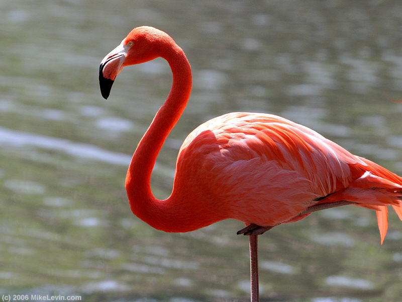
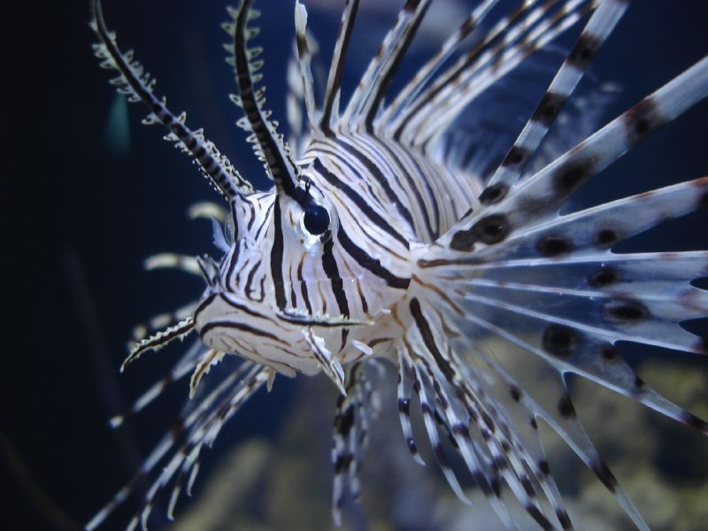
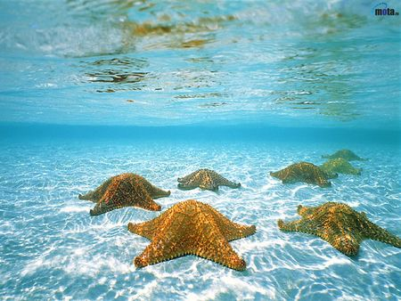

About the experiment
This experiment is to implement a slider of images. This is done using Z-index. The image keeps on changing after 2000 microseconds. z-index is set for the images in CSS and the images are stacked and displayed on after the other.
Code snippet
var $active = $('#slideshow img.active'); var $next = $active.next();
$next.addClass('active');
$active.removeClass('active');
Implementation



Link to references
Fellow classmates Experiments